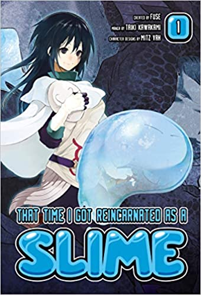

Volume 1
Release date JP May 2015
Release date EN Agust 2017
As players of Monster Hunter and Dungeons and Dragons know, the slime is not exactly the king of the fantasy monsters. So when a 37-year-old Tokyo salaryman dies and wakes up in a world of dragons and magic, he's a little disappointed to find he's become a blind, boneless slime monster.
Mikami's middle age hasn't gone as he planned: He never found a girlfriend, he got stuck in a dead-end job, and he was abruptly stabbed to death in the street at 37. So when he wakes up in a new world straight out of a fantasy RPG, he's disappointed but not exactly surprised to find that he's not a knight or a wizard but a blind slime demon. But there are chances for even a slime to become a hero...


